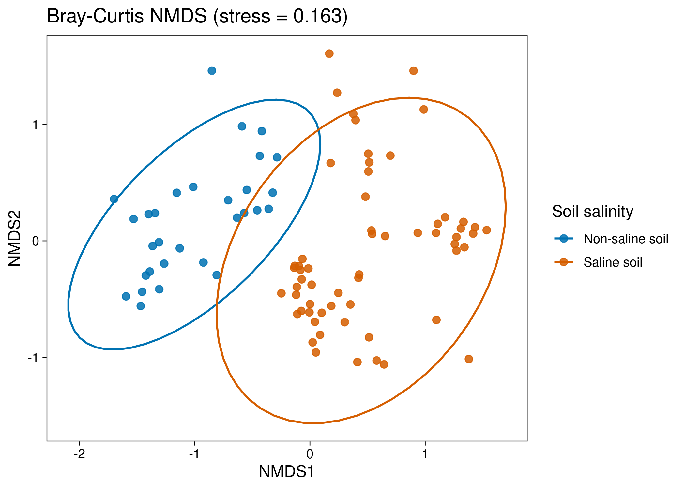
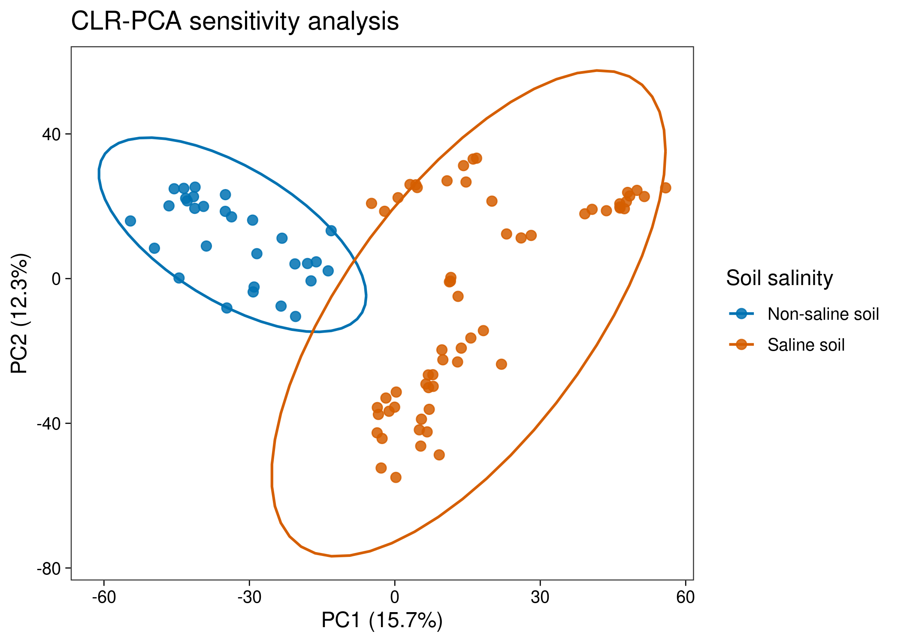
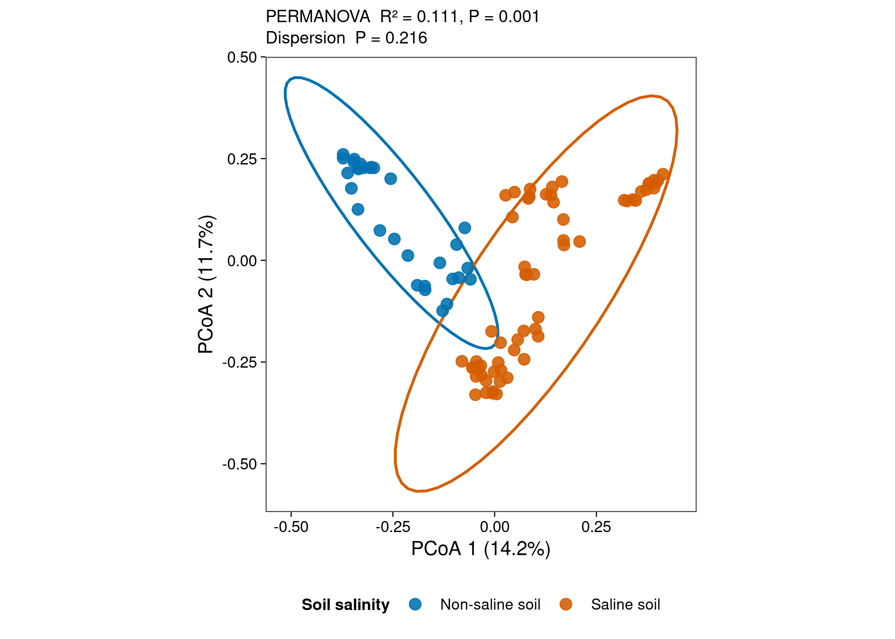

options(timeout = 600)
data_url <- "https://raw.githubusercontent.com/petemeng/microbiome-best-practices/3cb6a817e0c73ab7ecbec1cedc1ad80cbb9ecfaa/"
input_files <- c(
"data/small/environment.tsv",
"data/small/metadata.tsv",
"data/small/otutab.tsv",
"data/small/taxonomy.tsv"
)
for (path in input_files) {
dir.create(dirname(path), recursive = TRUE, showWarnings = FALSE)
if (!file.exists(path)) download.file(paste0(data_url, path), path, mode = "wb", quiet = TRUE)
}非约束排序：PCoA/NMDS/CLR-PCA（复现顶刊）
排序图展示的是距离结构，不是组间检验
微生物组论文中常见的“每个点代表一个样本、颜色代表分组、椭圆概括组内分布”的散点图，回答的是：
不同实验组的整体群落组成是否存在系统性差异？
本例使用中国湿地土壤 16S 数据。原始研究覆盖中国内陆、沿海和青藏高原湿地，并指出 pH 与电导率是重要环境因子；microeco 将其中一组标准 OTU、分类和样本表作为公开示例数据分发。原始数据论文（An et al., 2019）与microeco 软件论文（Liu et al., 2021）提供了可引用的数据与软件出处。
从公开表格重新计算的 PCoA 同时满足以下要求：
- X/Y 轴为
PCoA 1和PCoA 2，括号内给出轴解释比例； - 点按
Non-saline soil与Saline soil着色； - 图内同时报告 PERMANOVA 的 (R^2)、P 值和 dispersion test 的 P 值；
- PDF 用于排版，PNG/TIFF 为 300 dpi。
重要图和检验回答的不是同一件事
PCoA 展示距离矩阵的主要结构；PERMANOVA 检验组中心是否存在差异；betadisper 检查组内离散度是否不同。只有散点“看起来分开”不能替代统计检验，PERMANOVA 显著也必须结合离散度结果解释。
下载并读取本次分析的数据
需要 R，以及 ggplot2、scales、vegan。本次使用中国湿地的 OTU count 表、分类表和样本信息表，以及本次分析使用的实测环境变量或系统发育信息。
在一个新建的文件夹中运行以下代码，下载文件后按文中的顺序继续分析：
library(vegan)
library(ggplot2)
set.seed(20260718)
pal_pub <- c(
"#0072B2", "#D55E00", "#009E73", "#CC79A7",
"#E69F00", "#56B4E9", "#F0E442", "#999999"
)
scale_color_pub <- function(...) {
ggplot2::scale_color_manual(values = pal_pub, ...)
}
scale_fill_pub <- function(...) {
ggplot2::scale_fill_manual(values = pal_pub, ...)
}
theme_pub <- function(base_size = 12) {
ggplot2::theme_bw(base_size = base_size, base_family = "sans") +
ggplot2::theme(
panel.grid = ggplot2::element_blank(),
axis.text = ggplot2::element_text(color = "black"),
axis.ticks = ggplot2::element_line(color = "black", linewidth = 0.3),
legend.key = ggplot2::element_blank(),
legend.background = ggplot2::element_rect(
fill = scales::alpha("white", 0.7),
color = NA
)
)
}
save_pub <- function(
plot,
file_base,
width = 120,
height = 95,
units = "mm",
dpi = 300
) {
dir.create(dirname(file_base), recursive = TRUE, showWarnings = FALSE)
ggplot2::ggsave(
paste0(file_base, ".pdf"),
plot,
width = width,
height = height,
units = units,
device = grDevices::cairo_pdf
)
ggplot2::ggsave(
paste0(file_base, ".png"),
plot,
width = width,
height = height,
units = units,
dpi = dpi,
bg = "white"
)
ggplot2::ggsave(
paste0(file_base, ".tiff"),
plot,
width = width,
height = height,
units = units,
dpi = dpi,
compression = "lzw",
bg = "white"
)
invisible(plot)
}读取三件套并检查方向
OTU 表必须是“特征 × 样本”，taxonomy 的行名与 OTU 特征一致，metadata 的行名与 OTU 样本一致。
otutab <- read.delim(
"data/small/otutab.tsv",
row.names = 1,
check.names = FALSE
)
taxonomy <- read.delim(
"data/small/taxonomy.tsv",
row.names = 1,
check.names = FALSE
)
metadata <- read.delim(
"data/small/metadata.tsv",
row.names = 1,
check.names = FALSE
)
otutab <- as.matrix(otutab)
storage.mode(otutab) <- "numeric"
stopifnot(
identical(rownames(otutab), rownames(taxonomy)),
identical(colnames(otutab), rownames(metadata)),
all(otutab >= 0),
all(colSums(otutab) > 0)
)
dim(otutab)
otutab[1:5, 1:5]
taxonomy[1:5, , drop = FALSE]
head(metadata)[1] 13628 90
S1 S2 S3 S4 S5
OTU_4272 1 0 1 1 0
OTU_236 1 4 0 2 35
OTU_399 9 2 2 4 4
OTU_1556 5 18 7 3 2
OTU_32 83 9 19 8 102
Kingdom Phylum
OTU_4272 k__Bacteria p__Firmicutes
OTU_236 k__Bacteria p__Chloroflexi
OTU_399 k__Bacteria p__Proteobacteria
OTU_1556 k__Bacteria p__Acidobacteria
OTU_32 k__Archaea p__Miscellaneous Crenarchaeotic Group
Class Order Family Genus
OTU_4272 c__Bacilli o__Bacillales f__ g__
OTU_236 c__ o__ f__ g__
OTU_399 c__Betaproteobacteria o__Nitrosomonadales f__Nitrosomonadaceae g__
OTU_1556 c__Acidobacteria o__Subgroup 17 f__ g__
OTU_32 c__ o__ f__ g__
Species
OTU_4272 s__
OTU_236 s__
OTU_399 s__
OTU_1556 s__
OTU_32 s__
Group Type Saline
S1 IW NE Non-saline soil
S2 IW NE Non-saline soil
S3 IW NE Non-saline soil
S4 IW NE Non-saline soil
S5 IW NE Non-saline soil
S6 IW NE Non-saline soil下载完整 R 脚本。脚本包含数据下载、计算和图形导出。
首次使用时安装 R 包
install.packages(c("vegan", "ggplot2", "scales", "digest"))为什么先算距离，再做排序
先记住三条：
- PCoA 的输入是样本间距离矩阵。 选用 Bray–Curtis、Jaccard 还是 UniFrac，往往比最后选哪种二维排序更影响结论。
- Bray–Curtis 关注丰度组成差异。 对测序深度不同的计数表，先转换为样本内相对丰度，避免总 reads 数主导距离。
- 排序轴不是“菌群好坏轴”。 它们只是尽量保存样本间距离的数学方向，不能按坐标正负赋予生物学价值。
深入：PCoA、NMDS 与 CLR-PCA 怎么选
PCoA（principal coordinates analysis，主坐标分析）
PCoA 可以接收任意距离矩阵。Bray–Curtis PCoA 是 16S 研究中最常见的整体群落结构展示。非欧氏距离有时会产生负特征值，可使用 Lingoes 或 Cailliez 校正；本例用 cmdscale(add = TRUE) 添加 Lingoes 常数。
NMDS（non-metric multidimensional scaling，非度量多维标度）
NMDS 优先保存距离的秩次，而非距离的绝对数值。它没有“轴解释方差”，必须报告 stress。经验上 stress < 0.1 通常很好，0.1–0.2 可用于谨慎解释，> 0.2 时二维表示可能失真。NMDS 依赖随机初值，因此必须固定随机种子。
CLR-PCA（centered log-ratio PCA，中心对数比 PCA）
CLR 将成分数据映射到欧氏空间，PCA 后的欧氏距离对应 Aitchison 距离。但零值不能直接取对数；简单伪计数会影响结果，尤其是稀疏表。本例把 CLR-PCA作为敏感性分析，并明确报告零替代值与 prevalence 筛选阈值。若它是主要结论，优先考虑 robust Aitchison / RPCA，并比较不同零处理方案。
注记本例为什么按盐碱状态画主图
按盐碱状态分组时，PERMANOVA 显著而组内离散度检验不显著，适合演示“位置差异 + 离散度核查”的完整证据链。若改按三类湿地地理组分析，本数据的组内离散度检验也会显著，此时不能把 PERMANOVA 结果简单解释为组中心差异。
从距离矩阵得到PCoA、NMDS与CLR-PCA
低 prevalence 筛选与 Bray–Curtis 距离
保留至少在 5% 样本中检出的特征。这个阈值用于降低极低频特征对计算和噪声的影响，正式研究应报告阈值并做敏感性分析。
min_prevalence <- 0.05
min_samples <- ceiling(min_prevalence * ncol(otutab))
keep_feature <- rowSums(otutab > 0) >= min_samples
comm <- t(otutab[keep_feature, , drop = FALSE])
comm_rel <- sweep(comm, 1, rowSums(comm), "/")
metadata <- metadata[rownames(comm_rel), , drop = FALSE]
stopifnot(
all(abs(rowSums(comm_rel) - 1) < 1e-10),
identical(rownames(comm_rel), rownames(metadata))
)
dist_bray <- vegan::vegdist(comm_rel, method = "bray")
c(
samples = nrow(comm_rel),
retained_features = ncol(comm_rel),
original_features = nrow(otutab)
) samples retained_features original_features
90 11113 13628 PCoA 坐标
pcoa_fit <- stats::cmdscale(
dist_bray,
k = 2,
eig = TRUE,
add = TRUE
)
positive_eigenvalues <- pcoa_fit$eig[pcoa_fit$eig > 0]
pcoa_variance <- 100 * pcoa_fit$eig[1:2] / sum(positive_eigenvalues)
pcoa_df <- as.data.frame(pcoa_fit$points)
colnames(pcoa_df) <- c("PCoA1", "PCoA2")
pcoa_df$SampleID <- rownames(pcoa_df)
pcoa_df$Salinity <- factor(
metadata[pcoa_df$SampleID, "Saline"],
levels = c("Non-saline soil", "Saline soil")
)
head(pcoa_df)
round(pcoa_variance, 2) PCoA1 PCoA2 SampleID Salinity
S1 -0.2819267 0.07325613 S1 Non-saline soil
S2 -0.3521144 0.17689159 S2 Non-saline soil
S3 -0.3611914 0.21457312 S3 Non-saline soil
S4 -0.3721882 0.25104083 S4 Non-saline soil
S5 -0.3341215 0.22442004 S5 Non-saline soil
S6 -0.3455585 0.24112151 S6 Non-saline soil
[1] 14.25 11.66PERMANOVA 与组内离散度
示例样本按独立样本进行 999 次自由置换。若研究包含配对、重复测量、区组或采样点层级，必须限制置换范围。
set.seed(20260718)
permanova <- vegan::adonis2(
dist_bray ~ Salinity,
data = pcoa_df,
permutations = 999
)
dispersion_model <- vegan::betadisper(
dist_bray,
group = pcoa_df$Salinity,
type = "median",
bias.adjust = TRUE
)
set.seed(20260718)
dispersion_test <- vegan::permutest(
dispersion_model,
permutations = 999
)
permanova
dispersion_test
permanova_r2 <- unname(permanova$R2[1])
permanova_p <- unname(permanova$`Pr(>F)`[1])
dispersion_p <- unname(dispersion_test$tab$`Pr(>F)`[1])Permutation test for adonis under reduced model
Terms added sequentially (first to last)
Permutation: free
Number of permutations: 999
vegan::adonis2(formula = dist_bray ~ Salinity, data = pcoa_df, permutations = 999)
Df SumOfSqs R2 F Pr(>F)
Salinity 1 3.2599 0.11106 10.994 0.001 ***
Residual 88 26.0925 0.88894
Total 89 29.3524 1.00000
---
Signif. codes: 0 '***' 0.001 '**' 0.01 '*' 0.05 '.' 0.1 ' ' 1
Permutation test for homogeneity of multivariate dispersions
Permutation: free
Number of permutations: 999
Response: Distances
Df Sum Sq Mean Sq F N.Perm Pr(>F)
Groups 1 0.00468 0.0046803 1.5095 999 0.216
Residuals 88 0.27284 0.0031005 本例中，PERMANOVA 说明两类土壤的整体群落结构存在统计差异；离散度检验未发现显著差异，因此结果不太可能仅由某一组更分散造成。这里的 P 值仍需结合真实研究设计解释。
NMDS：用 stress 判断二维表示是否可靠
set.seed(20260718)
nmds_fit <- vegan::metaMDS(
dist_bray,
k = 2,
trymax = 200,
autotransform = FALSE,
trace = FALSE
)
nmds_df <- as.data.frame(
vegan::scores(nmds_fit, display = "sites")
)
nmds_df$SampleID <- rownames(nmds_df)
nmds_df$Salinity <- pcoa_df[nmds_df$SampleID, "Salinity"]
p_nmds <- ggplot(nmds_df, aes(NMDS1, NMDS2, color = Salinity)) +
geom_point(size = 2.3, alpha = 0.85) +
stat_ellipse(type = "t", level = 0.95, linewidth = 0.7) +
scale_color_pub(name = "Soil salinity") +
labs(
title = sprintf("Bray-Curtis NMDS (stress = %.3f)", nmds_fit$stress),
x = "NMDS1",
y = "NMDS2"
) +
theme_pub()
p_nmds
nmds_fit$stress[1] 0.1633241CLR-PCA：把零处理写进分析假设
下面保留至少 20% 样本中出现的特征，并用 0.5 read 作为零替代值。这是透明、易复现的敏感性分析，不应被描述为唯一正确的零处理方案。
clr_min_prevalence <- 0.20
keep_clr <- rowSums(otutab > 0) >=
ceiling(clr_min_prevalence * ncol(otutab))
clr_counts <- t(otutab[keep_clr, , drop = FALSE])
zero_replacement <- 0.5
log_replaced <- log(clr_counts + zero_replacement)
clr_matrix <- log_replaced - rowMeans(log_replaced)
clr_pca_fit <- stats::prcomp(
clr_matrix,
center = TRUE,
scale. = FALSE,
rank. = 2
)
clr_variance <- 100 * summary(clr_pca_fit)$importance[2, 1:2]
clr_df <- as.data.frame(clr_pca_fit$x[, 1:2, drop = FALSE])
clr_df$SampleID <- rownames(clr_df)
clr_df$Salinity <- pcoa_df[clr_df$SampleID, "Salinity"]
p_clr <- ggplot(clr_df, aes(PC1, PC2, color = Salinity)) +
geom_point(size = 2.3, alpha = 0.85) +
stat_ellipse(type = "t", level = 0.95, linewidth = 0.7) +
scale_color_pub(name = "Soil salinity") +
labs(
title = "CLR-PCA sensitivity analysis",
x = sprintf("PC1 (%.1f%%)", clr_variance[1]),
y = sprintf("PC2 (%.1f%%)", clr_variance[2])
) +
theme_pub()
p_clr
如果 Bray–Curtis PCoA 与 CLR-PCA 给出不同故事，先检查稀疏度、零替代、prevalence 阈值和极高丰度特征，而不是选择“更好看”的一张。
在排序图中保留距离、拟合与检验信息
主图把检验结果放在图内，避免图注与分析版本脱节。轴解释率来自当前 PCoA 模型，不能手工抄写。
format_p <- function(p) {
if (is.na(p)) {
return("= NA")
}
if (p < 0.001) {
return("< 0.001")
}
sprintf("= %.3f", p)
}
stat_label <- paste0(
"PERMANOVA R² = ", sprintf("%.3f", permanova_r2),
", P ", format_p(permanova_p),
"\nDispersion P ", format_p(dispersion_p)
)
p_pcoa <- ggplot(
pcoa_df,
aes(PCoA1, PCoA2, color = Salinity)
) +
stat_ellipse(
type = "t",
level = 0.95,
linewidth = 0.75,
show.legend = FALSE
) +
geom_point(size = 2.7, alpha = 0.88) +
scale_color_pub(name = "Soil salinity") +
labs(
subtitle = stat_label,
x = sprintf("PCoA 1 (%.1f%%)", pcoa_variance[1]),
y = sprintf("PCoA 2 (%.1f%%)", pcoa_variance[2])
) +
coord_equal() +
theme_pub(base_size = 11) +
theme(
plot.subtitle = element_text(size = 9.5, lineheight = 1.05),
legend.position = "bottom",
legend.title = element_text(face = "bold", size = 9),
legend.text = element_text(size = 8.5)
) +
guides(color = guide_legend(nrow = 1, byrow = TRUE))
p_pcoa
save_pub(
p_pcoa,
"figures/22-pcoa-bray",
width = 120,
height = 95
)导出后得到：
figures/22-pcoa-bray.pdf：矢量版，优先用于论文排版；figures/22-pcoa-bray.png：300 dpi，适合网页与公众号；figures/22-pcoa-bray.tiff：300 dpi、LZW 压缩，适合要求 TIFF 的期刊。
常见坑
注意审稿人最常追问的六件事
- 只报告 PERMANOVA，不检查 dispersion。 组内离散度显著时，PERMANOVA 可能同时反映位置与扩散范围的差异。
- 直接对原始 reads 算 Bray–Curtis。 测序深度差异可能进入距离；本例先转换为相对丰度。
- 把椭圆当作显著性边界。
stat_ellipse()是分布概括，不是组间检验，也不适合样本数过少的组。 - 忽略研究设计。 配对、重复测量或同一采样点的样本不能自由置换；可在
adonis2()中用strata = metadata$SubjectID限制置换。 - 把 NMDS 轴写成解释方差。 NMDS 没有轴解释率，只报告 stress；stress 过高时增加维数或重新审视距离。
- 伪计数不报告。 CLR 结果会随零替代方案变化；必须写明替代值、筛选阈值，并进行敏感性分析。
警告真实反例：换成地理分组会发生什么
将 Salinity 换为 metadata$Group 后，本示例数据的 PERMANOVA 与 dispersion test 都显著。此时可以说“组间群落分布存在差异”，但不能把差异全部归因于组中心移动。这个检查不应因主图看起来分得很开而省略。
报告距离、排序和离散度检验的方法与限制
下面英文可直接替换分组名、筛选阈值和置换设计：
Community structure was evaluated using Bray–Curtis dissimilarities calculated from sample-wise relative-abundance profiles. Features detected in at least 5% of samples were retained, resulting in 11,113 features across 90 samples. Principal coordinates analysis (PCoA) was performed with a Lingoes additive correction. Differences between soil-salinity groups were tested by PERMANOVA with 999 permutations ((R^2) = 0.111, P = 0.001). Homogeneity of multivariate dispersion was assessed using distances to spatial medians with small-sample bias adjustment (P = 0.216). Permutations were unrestricted because the demonstration metadata contained no repeated-measures or blocking variable.
若真实数据有 SubjectID、SiteID 或 Batch，最后一句必须改成实际的受限置换设计。
将距离、排序和离散度检验用于自己的研究
只需替换三个路径和分组列名：
otutab <- read.delim(
"your_project/otutab.tsv",
row.names = 1,
check.names = FALSE
)
taxonomy <- read.delim(
"your_project/taxonomy.tsv",
row.names = 1,
check.names = FALSE
)
metadata <- read.delim(
"your_project/metadata.tsv",
row.names = 1,
check.names = FALSE
)
group_col <- "Treatment"
metadata$AnalysisGroup <- factor(metadata[[group_col]])
stopifnot(
identical(rownames(otutab), rownames(taxonomy)),
identical(colnames(otutab), rownames(metadata))
)输入约定：
otutab：行是 ASV/OTU，列是样本，单元格是非负 reads 数；taxonomy：行与otutab完全一致，列为 Kingdom 至 Species；metadata：行是样本，至少包含分组列；- 若样本顺序不一致，先按样本 ID 显式重排，不能只取交集后假定顺序正确；
- 若有配对或区组设计，保留对应列并在置换检验中使用；
- 若使用 UniFrac，还需一棵 tip 名称与特征 ID 一致的系统发育树。
参考
- An J, Liu C, Wang Q, et al. Soil bacterial community structure in Chinese wetlands. Geoderma. 2019;337:290–299. doi:10.1016/j.geoderma.2018.09.035
- Liu C, Cui Y, Li X, Yao M. microeco: an R package for data mining in microbial community ecology. FEMS Microbiology Ecology. 2021;97(2):fiaa255. doi:10.1093/femsec/fiaa255
- Gower JC. Some distance properties of latent root and vector methods used in multivariate analysis. Biometrika. 1966;53:325–338.
- Anderson MJ. A new method for non-parametric multivariate analysis of variance. Austral Ecology. 2001;26:32–46. doi:10.1111/j.1442-9993.2001.01070.pp.x
- Anderson MJ. Distance-based tests for homogeneity of multivariate dispersions. Biometrics. 2006;62:245–253. doi:10.1111/j.1541-0420.2005.00440.x
- Oksanen J, Simpson GL, Blanchet FG, et al.
vegan: Community Ecology Package. CRAN package page